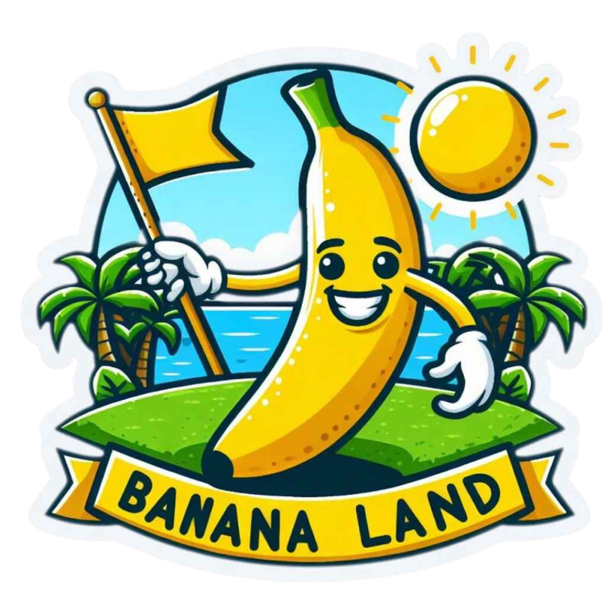
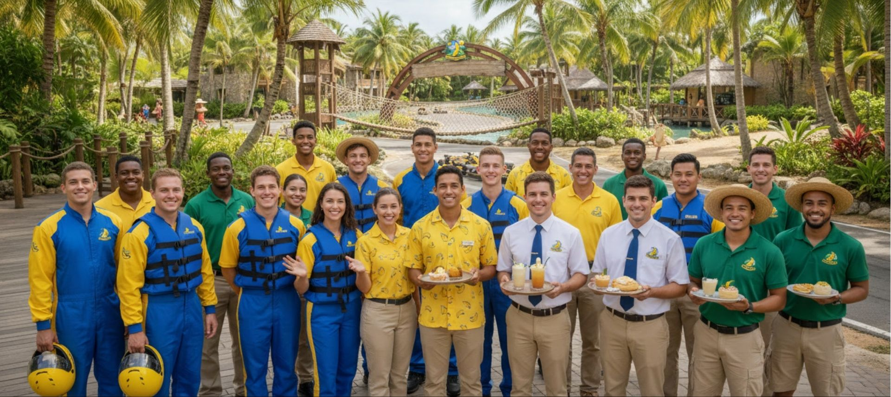

Un parc de loisirs tropical où l'aventure, la gastronomie et la joie de vivre se réunissent pour créer des souvenirs inoubliables.

Banana Land est né d'une vision simple et audacieuse : créer un lieu où chaque visiteur se sent transporté dans un paradis tropical, loin du quotidien. Depuis son ouverture, le parc a grandi pour devenir une destination incontournable, portée par une équipe passionnée et multiculturelle, unie par les couleurs jaune et bleu qui symbolisent le soleil et la mer.
Offrir à chaque visiteur une expérience de loisirs exceptionnelle dans un cadre tropical authentique, sûr et accueillant pour toute la famille.
Devenir la référence des parcs de loisirs tropicaux, reconnus pour l'excellence de leur service et le bonheur qu'ils procurent à leurs visiteurs.
Joie — Authenticité — Excellence — Sécurité — Partage. Cinq piliers qui guident chaque geste de notre équipe au quotidien.
Moniteurs nautiques en combinaison bleue, hôtes en chemise soleil, serveurs en tablier blanc et guides en polo vert — chaque membre de l'équipe Banana Land porte bien plus qu'un uniforme : il incarne la chaleur et l'hospitalité qui font la signature du parc. Formés aux plus hauts standards de sécurité et d'accueil, nos collaborateurs sont le cœur battant de l'expérience Banana Land.